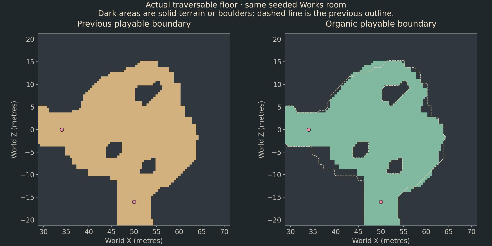

REJECTED / RETIRED. This rebuild has been removed from the active game. The committed canyon is restored; current work is a small face-detail study only. Experimental sources are archived under canyon-formations/rejected-source.
Historical outline-only phase. The current contour and terrace correction includes the later boundary collar, wall topology changes and current validation.
DeathWard · Physical canyon boundary phase
The playable outline
now changes with the rock.
The user authorized changing the actual playable boundary. This pass changes collision and navigation around seeded lobes and concave bays. Roads, exit sockets and the room graph are preserved. Narrow cliff facets and continuous terrace bands are still visible; their art-direction correction remains unfinished.
Actual traversable outline
Sampled collision at 0.5-metre spacing in the same seeded Works room. Dark areas are solid ground or existing boulders. Pink circles are unchanged passage sockets; the dashed line is the previous outline. This plot is generated from collision samples, not painted over a screenshot. The earlier physical boundary already contained curved regions; the new profile adds stronger asymmetry and bays.

Collision samples · Preserved road samples · Sockets
Matched native captures
Same executable, seed, room and unchanged 160% camera / 45° perspective / 1440 × 900. Classic mode restores the old physical outline for comparison. Screenshots are unretouched. The quiet power room avoids enemy attack effects obscuring the terrain.
Quiet room
Works room, with ordinary combat residents
Implementation
CanyonBoundaryStyle selects Classic or Organic construction. Organic is the default. The public buildCanyon() entry point remains compatible.- The ordinary basin profile uses correlated angular components at two, three and five lobes. A bounded smooth function produces broader protrusions and deeper concave bays without consuming the existing layout/outcrop RNG stream.
- The established layout is first generated in Classic mode to obtain its exact seeded road. Organic generation reserves that road and its shoulders, plus the existing center/objective/arrival/socket corridors and space around retained outcrops.
- Original river courses, bank influence areas and repaired fords are reused. Boundary-river bank rooms keep their existing shore openings. This prevents boundary sculpting from isolating banks or inventing new crossings.
- A bounded navigation flood removes only tiny disconnected edge pockets, protecting anchors, roads and water crossings. Floor cells, room floor area and collision are then rebuilt from the final terrain.
- Road planning retains an already generated road rather than recomputing a different path on the reshaped floor. Clearing its samples explicitly requests replanning.
- Sharper concave boundaries exposed folds in the existing cosmetic rim deformation. An orientation guard reduces that deformation coherently across the mesh until it preserves winding. Visual ray normals now handle very small clipped triangles correctly; regressions cover both failures.
The room graph, room IDs, centers, bounds, objective/entry/exit anchors and passage transforms are unchanged. The floor inside those envelopes is intentionally different. Actual usable area can change, and existing area-based enemy placement/budget rules consume that area as before. No AI, combat, controls, UI, camera, material or lighting code was edited. No assets or vegetation-density settings were changed; terrain-aware dressing naturally resamples support against the new terrain.
Native validation
The boundary suite compares independently generated Classic and Organic maps, repeats seeds, checks exact road positions/widths/rut coordinates, unchanged river centerlines/widths, unchanged room and passage identities, clear cores/sockets, changed physical floor signs and three five-room tutorial maps. Existing suites exercise road shoulders, both river types, ford connectivity, combat seals, variable 9–15-room floors, keys, room graphs and boss clearance. GPU suites check actual visible mesh rays, supported props, density stability, fading, outlines and real firing input. Boss tests cover early and late floor profiles with weak builds.
PASS organic boundaries maps=14 changed_vertices=12161 identical_road_samples=7447 clear_sockets=440 tutorial_maps=3
{
"maps": "12",
"categories": "4",
"asset_roles": "5",
"candidates": "21972",
"collision_room_checks": "180",
"original_highland_median": "7.55863",
"visual_highland_median": "3.56827",
"original_max": "10.7415",
"visual_max": "6.8",
"appearance_mean_ms": "616.69"
}Generation cost
Fourteen matched Classic/Organic construction samples in the native boundary test, without rendering. Seed-replay constructions are excluded from the paired timings. This is a local startup observation, not a gameplay FPS benchmark. Organic currently performs two construction passes to preserve the existing road course.
{
"paired_maps": "14",
"classic_mean_ms": "376.237",
"organic_mean_ms": "757.285"
}Reversibility and usage
# New physical boundaries (default)
./build/deathward --expedition --theme canyon --style original
# Previous physical boundaries, same visual treatment
DEATHWARD_CANYON_BOUNDARY=classic ./build/deathward --expedition --theme canyon --style original
DEATHWARD_CANYON_BOUNDARY=organic explicitly selects the new mode. Unknown values fail clearly. The older assets/visual/canyon.cfg enabled flag still controls appearance; the boundary mode controls the actual floor/collision generator. Restart or generate a new expedition to compare modes.
Remaining work
- The repeated narrow cliff facets and room-wide terrace patterns remain unfinished. This is the playable-outline phase, not a claim of full visual reference fidelity.
- Existing river-bank/channel influence regions retain their previous geometry; ordinary room boundaries are sculpted around them.
- The established visual rock-height treatment remains separate from the taller canonical collision field.
- Organic generation currently builds the classic layout once to preserve its roads, then rebuilds the boundary; this adds startup/floor-generation cost.
- Only native Linux was validated; WASM checks remain waived.
This completes the physical-boundary phase, not the full reference-matching task. The next visual work must address cliff facet topology and local terrace placement without replacing the canyon with the rejected low rim and flat masses.
Changed sources: CanyonTerrain.cpp, CanyonBoundary.hpp, CanyonRoad.cpp, the mesh-safety fixes in CanyonAppearance.cpp, focused tests and CMake registration. The annotated specification remains below for future acceptance.

Structured status · Build evidence